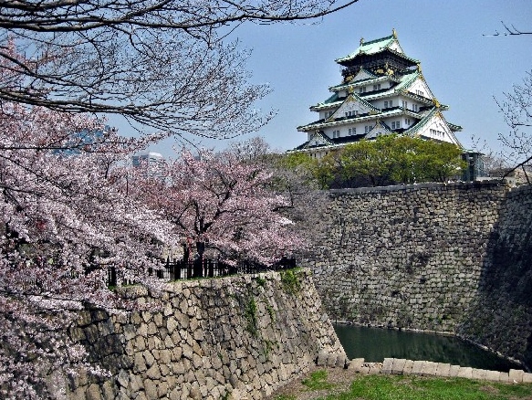

선사시대
구석기 시대 일본은 한반도 및 타이완, 남중국과 육지로 연결되어 있었으며 이후 해수면이 상승하면서 이곳의 주민들은 고립되어 일본 원주민을 이룬다. 일본의 구석기 시대는 약 12만 년 전에 시작한다. 이 시기의 유물이나 화석인류는 그다지 많이 남아있지 않은데, 일본의 지각변동이 심하다는 점, 산성 화성암 토양이기 때문에 유골이 남기 힘들다는 점 등이 이유로 뽑힌다. 그래도 아예 없지는 않고 드문드문 발견되는 수준. 시즈오카의 화석인류인 하마키타인(浜北人)이나, 군마의 이와쥬쿠(岩宿) 구석기 유적이 유명하다. 일본의 신석기 시대인 조몬 시대는 길게 보면 기원전 1만 년까지 거슬러 올라가지만, 청동기시대와 철기시대는 기원전 3세기경 이후 한반도 및 남중국에서 문물이 유입되면서 시작되었다. 기원전 5 ~ 3세기부터 기원후 3세기까지의 시기를 야요이 시대라고 한다. 한국이나 일본 등의 연구에서 야요이인은 한반도 출신인으로 추정되고 있다. 한반도랑 더불어 토착 기원설, 남중국, 폴리네시아 유입설도 존재하고 있지만 대다수는 한반도에서 유입되었다. 하여튼 청동기와 철기가 넘어간 이후 기타큐슈와 혼슈 남부를 중심으로 소국들이 세워졌으며, 이합집산을 거쳐 4세기경에는 미약하게나마 중앙 집권적인 체제를 갖춘 야마토가 등장하여 외교력을 행사하기 시작하였다. 이때를 고훈 시대(Kofun jidai)라고 한다.
고대 일본

일본이 국가로서 틀을 잡은 6 ~ 7세기 아스카 시대에는 쇼토쿠 태자가 불교를 공인하는 한편, 견수사가 파견되어 한반도를 거치지 않고 직접 중국의 선진 문화를 도입하는 모습을 보여준다. 근데 이때 수양제에게 보낸 국서에 "해 뜨는 나라의 천자가 해 지는 나라의 천자에게"라는 문구를 기입하는 보낸 사신은 어떻게 됐을까?용자짓을 보여준다. 이는 오늘날까지도 이어지는 일본의 특징인 그들만의 세계(수양제가 고구려를 넘어 섬나라인 일본을 침공하지 못할 것을 알고 있었으므로 상대방에게 도발을 감행한 것)를 보여주는 좋은 예다. 만주와 한반도에 위치해 있어 대륙의 정세를 살피고 중국의 정권과의 외교관계를 신경써야 하는 한민족의 여러 국가와는 달리, 고립된 섬나라인 일본은 그러한 당대의 보편적 트렌드와 상관없이 자신들만의 세계관을 구축하려 한 것이다. 만주와 한반도의 세력은 중화 중심의 세계관을 외교적으로 수용함으로써 실익을 도모하는 위치에 있었던 반면, 일본은 지리적인 한계로 중국 문물을 들여오는 데에 상대적인 한계가 있는 반면 직접적인 중화질서의 일원에서는 한 발짝 비켜 서서 동북아시아에서 고립적이고 독자적인 세계관을 구축했다. 쇼토쿠 태자 사후 다이카 개신과 한반도에서 대규모 이주를 거치면서 일본은 정치적 변화의 시기를 맞게 되는데, 이쯤에 덴무 덴노가 국명을 '일본'으로 바꾸고 덴노(天皇)라는 군주의 칭호를 확립하면서 본격적인 율령제 중앙집권국가로 재탄생하게 되었다. 이후 나라 시대까지는 한반도를 거치지 않고 직접 당의 문물을 받아들여 국력을 키웠고, 간무 덴노가 다시 헤이안(교토)로 수도를 옮기면서 자주적인 국풍 문화를 꽃피우고 번성했으나(헤이안 시대), 점차 외척과 귀족들의 세력이 강해지면서 덴노의 왕권은 약화되었다. 특히 후지와라 가문의 200년에 걸친 세도 정치가 유명하다. 이 시기 도다이 사를 비롯하여 불교 문화가 발달하였고 정토종, 선종의 수용은 후의 지방 분권화를 촉진하게 된다.
중세 일본 막부(바쿠후) 성립과 전국시대
이후 12세기 겐페이 전쟁를 거치며 무사들의 세력이 강성해지면서 덴노와는 별도로 쇼군이 통치하는 막부가 세워지며 쇼군이 사실상의 실권을 잡게 되었다. 가마쿠라 막부 시기 마침내 덴노와 쇼군의 위치는 완전히 뒤바뀌게 되었다. 그러나 여몽연합군의 일본원정을 거치면서 가마쿠라 막부는 쇠퇴, 붕괴되었다. 이후 잠시 겐무 신정이 있었지만 남북조시대를 거치면서 다시 교토에 무로마치 막부가 세워졌는데, 이 시기 왜구가 창궐하여 주변국의 을씨년스러운 분위기에 기름을 부었다. 한편으로 이 시기는 일본 경제 발전의 시기이기도 했는데 견당사를 통해 유입된 모내기법(= 이모작)이 보급되고 우경이 시작되었으며 상업이 발달하여 후의 문화 수용에도 긍정적인 영향을 끼친다. 한편 이러한 막부 시대를 거치면서 다이묘(大名), 즉 봉건 영주의 세력이 강해졌고 무로마치 막부의 붕괴(오닌의 난) 이후 본격적인 군웅할거의 시대에 돌입한다. 특히 전란으로 유명한 이 시대가 바로 무로마치 막부와 에도 막부 사이에 끼인 전국시대(戰國時代, 1477~1573). 이때의 영향이 너무 컸던 탓에 이후 일본은 이때 생겨난 생활 풍습과 문화 등에 많은 영향을 받고 있다. 흔히 말하는 무사도(부시도) 문화의 기원이 바로 이 시대다.
근세 에도 막부
전국시대에 등장한 여러 다이묘들 가운데 오다 노부나가(1534~1582)가 뛰어난 지략과 서양 총기의 도입을 통해 새로운 전술로 연승을 거두면서 거의 통일을 완수하였으나 혼노지의 변으로 사망하고 말았다. 오다 노부나가의 죽음으로 정국이 혼란에 빠진 가운데, 노부나가의 부장 가운데 한 사람이었던 도요토미 히데요시가 발빠른 행동으로 혼란을 수습하고 정권을 장악하는 데 성공했다. 결국 히데요시에 의해 통일이 완수되면서 전국시대는 막을 내렸다. 도요토미 히데요시는 기세를 몰아 임진왜란을 일으키지만 실패하였다. 오다 노부나가와 도요토미 히데요시의 치세 시기를 아즈치모모야마시대(1568~1603)라고 한다. 도요토미 히데요시 사후 세키가하라 전투를 통해 정권을 잡은 도쿠가와 이에야스에 의해 도쿠가와 막부(에도막부)가 들어선다. 전국시대를 즈음하여 일본은 서구 문명과의 접촉 과정에서 놀라울 정도로 서양 문물을 쉽게 받아들였는데, 대표적으로 철포(조총)이 있다. 초기 포르투갈과 네덜란드 기술을 다른 아시아 국가들보다 포용력 있게 흡수하고 동남아 교역도 활발했으나, 에도 막부가 들어서면서 교류는 나가사키에 한정되고 쇄국 정책이 시행되었다. 에도 막부는 중앙 집권화를 추구하여 소위 무사도 또한 중앙 통치에 알맞게 격식화되었으며, 조선으로부터 성리학을 수입하여 통치에 활용하고, 통신사를 통해 쇼군의 정통성을 세웠다. 그러나 이러한 문화는 경제 발전에 힘입은 서민 층의 죠닌(町人) 문화와 병존하였고 이 균형이 깨질 때 즈음 서양 세력이 등장하자 지지를 잃은 에도 막부는 사쓰마 번, 조슈 번 등의 유신웅번들을 중심으로 한 존왕파에 의해 무너져 내린다.
근대 메이지 유신과 제국주의(일본 제국)
메이지 덴노 이래 군부로 다시 실권이 넘어간 메이지 유신 이후의 근대화 속도는 가히 어마어마했다. 이에 대한 반발 또한 엄청났으나 덴노를 중심으로 한 민족주의와 타이완, 류큐, 조선에 대한 연이은 침략 정책으로 관심을 외부로 돌리면서 동아시아 국가 중에서 가장 빠르게 근대화에 성공했다. 그 결과 아시아 국가 중 태국, 네팔, 아프가니스탄과 함께 서구권 국가들의 식민지가 되지 않았고, 사실상 유일한 국가로서 비서구 국가 중 유일하게 제국주의를 표방하게 된다. 그에 따라 당시 주변국인 류큐, 대만, 조선 및 요동 반도와 남사할린 등을 점령하는 한편, 눈치 잘 보고 줄을 잘 선 덕에 러일전쟁에서도 승리하고, 제1차 세계 대전 때도 잘 넘어갔다, 이후 쌀 소동과 관동대지진 등의 악재가 있었긴 했지만, 그러다 쇼와 초반 10여 년을 갓 지나고 나서 나치 독일, 파시스트 이탈리아와 추축 동맹을 맺고 동양의 서구열강 이권도 건드리기 시작한다.
쇼와 시대 전반기: 태평양 전쟁
중일전쟁 이후, 일본의 대아시아 확장정책에 반감을 느낀 미국이 '계속 그렇게 놀면 석유 등 중요 물자를 안 팔겠다'는 초강수로 나서자, 이성을 잃은 일본 군부는 미 해군의 중핵인 하와이 진주만 기지를 전격 기습, 본격적인 대미전쟁을 일으켰다(1941년). 아예 동남아시아와 태평양권 전체를 싸그리 식민지로 만드는 등 야심을 키웠지만 미드웨이 해전에서 결정적인 대패, 일본 해군 연합함대의 중추 전력을 상실했다. 이후 터져나오는 미국의 먼치킨 공업생산력에 밀리고 밀리다가 반자이 어택 및 카미카제 등 기행을 반복하였다. 일본이 항복하지 않고 끈질기게 저항하자 미국은 전쟁을 빨리 끝내기 위해 일본에 원자폭탄을 터뜨린다. (당시 전황에 대한 자세한 사항은 태평양 전쟁 항목 참조) 미국이 원자폭탄을 떨어뜨린 이유에 대해 소련군이 한반도 근처까지 진격해 오자 소련을 견제하기 위해서였다고 주장하는 사람들도 있는데, 소련군이 일본을 공격하기 시작한 것은 8월 8일로 미국이 원자폭탄을 떨어뜨린 8월 6일 후의 일. 도리어 미국은 소련이 태평양 전쟁에도 참여할 것을 줄기차게 요구하고 있었다. 일본은 원자폭탄을 맞아도 절대 항복하지 않고 죽창을 잡을 것이며, 만주국 관동군의 저항도 상당하리라고 미국이 과대평가를 하고 있었기 때문이었다. 미국은 이미 원폭이 먹히지 않을 경우를 대비해 시나리오로 1946년을 겨냥한 올림픽 작전을 계획하고 있었다. 하지만 일본이 원자폭탄을 맞자마자 곧바로 항복하면서 그럴 필요는 없게 되었고, 태평양 전쟁에서 경험했던 격렬한 일본군의 저항과 이로 인한 미군의 큰 손실과는 다르게 이미 독소전에서 지옥을 맛봤던 소련군은 만주의 관동군을 파죽지세로 격파하며 한반도까지 진격하게 된 것이다. 여기에 대한 보다 구체적인 사정은 제2차 세계 대전 항목 참조.
현대 일본 - 패전 이후

패전 후 더글러스 맥아더 휘하의 GHQ 시대를 거치면서, 경제나 식량사정이 피폐해져 있던 일본은 1950년 한국전쟁의 발발로 UN군의 병참기지 역할을 수행하며 전쟁특수로 공업기반을 재건하였고 1952년 미국의 군정체제에서 독립하였다. 이후 진무경기를 맞이하며 괄목할 만한 경제성장을 이룩했다. 1954년 12월부터 1957년 6월까지 31개월 동안 이어진 전후 첫 번째 대형 호경기. 진무 경기 동안 일본은 미국의 원조경제에서 명실상부하게 독립하는 발전을 이뤘다. 이름도 일본 신화에 등장하는 초대 왕 '진무(神武)'에서 따왔다. 일본 정부가 1956년 경제백서에서 '이제 전후(戰後)는 끝났다'고 선언할 정도였다. 이 시기 이루어진 자유당 - 민주당의 합당으로 자민당이 만년 여당이 되는 55년 체제가 문을 열었다. 1960년대에는 서독을 제치며 미국과 소련에 이어 세계 경제 규모 3위에 도달했다. 또한 1951년의 미일안보조약에 이어 미군의 장기 주둔을 인정하는 개정을 1960년에 자민당이 강행하였다. 이에 반대하는 시위가 일본의 본격적인 시민운동의 시작이다. 뒤이어 일본 전후 최대, 최장기 호황으로 1965년 11월~1970년 7월의 5년 8개월 동안의 이자나기 경기 등 일련의 호황을 거친다. 1970년대 초반에는 국제통화위기(1971년)와 제1차 유류파동(1971년)이 발생하였다. 일본도 그에 따른 혼란을 겪었다. 유류파동은 일본은 경제구조를 3차산업 위주로 개편하게 만들었다. 1970년대 후반기에 들어서 일본의 경제는 순조롭게 성장하게 되었으며 그것들은 구미 선진국들과 비교해도 우수한 것이었다. 마이크로 전자공학(microelectronics) 혁명이 발생하여 전자산업 등의 신기술 혁신이 있었다. 그로 인하여 파급된 것은 산업구조에 들어가는 자원과 비용이 적어진 것이다. 1970년대 후반기의 일본은 낮은 실업률을 기록하고 안전된 노사관계를 유지하여 안정적인 경제체제에 돌입하였다. 1980년대는 단카이 세대(團塊世代·1947~50년생)가 40대에 들어선 시기이기도 하다. 일본은 1980년대에 고도성장은 아니지만 연평균 4 ~ 5%대의 안정적인 성장을 하였다. 1984년, 일본의 1인당 GNP는 1만 474달러에 달하였다. 동시기 미국은 1만 5,949달러의 GNP를 가지고 있었다. 즉 일본은 1984년 기준으로 개인 소득에서 미국을 66%까지 추격한 것이다. 1985년 플라자 합의 이후 급격한 엔화의 상승이 시작된다. 동시에 국내 금리가 하락하여 버블 경제를 초래하는 기반이 마련된다. 동시기 서구의 국가들은 실업과 인플레로 어려움을 겪고 있었다. 1985년 엔화 강세로 일시적인 위기를 겪는다. 일본의 거품 경제(バブル景気 ←버블 경기)의 기준을 1986년부터 1991년까지로 정하는 구분도 있다. 수요감소와 설비과잉이 바로 그것이다. 일본 정부는 엔화가치 상승으로 인한 국내 수출산업과 제조업의 경쟁력을 지원하기 위해 저금리 정책을 시작한다. 1987년 2월, 일본은행은 시준 은행들에게 정책금리를 2.5%까지 낮추었다. 시중 금리의 하락을 유도한 것이다. 일본의 저금리 정책으로 환리스크를 보유한 미국 채권 등이 일본 국내시장에 침투한다. 이로 인하여 부동산과 주식이 급등한다. 1989년 12월 29일, 닛케이 평균주가(日経平均株價, にっけいへいきんかぶか)가 사상 최고치를 기록하며 38,915엔 87전 도달하였다. 문화적으로도 80년대는 활황이었다. 대중음악시장에서는 일본 아이돌이 발전하였다. 1980년대에 등장한 대표적인 남자 아이돌은 타하라 토시히코, 콘도 마사히코, 히카루GENJI 등이다. 여자 아이돌은 마츠다 세이코, 나카모리 아키나가 가장 유명하였다. 80년대 후반에는 쿠도 시즈카, 아사카 유이, 나카야마 미호, 미나미노 요코가 아이돌 4대천왕으로 불리며 영화나 드라마까지 진출하였다. 버블시기에 망가, 일본 애니메이션의 국내수요도 늘어나 일본 서브컬처의 르네상스 시기를 맞이하였다. 일본의 국제사회에서의 지위가 올라가면서 일본의 문학이나 건축, 만화가 해외에서도 주목을 받기 시작한다. 이런 흐름은 90년대 초반까지 이어진다. 군사적으로는 4,000톤급 하츠유키급 12척[22]과 7,200톤 시라네급 헬기 구축함을 2척, 4,900톤 아사기리급(DD-151 ~ DD-154)4척, 5,900톤 하타카제급 방공함 2척을 도입한 시기였다. 거품경제시기 일본은 해군력도 폭발적으로 증강시켰다. 80년대 말엔 경제력 세계정상을 넘보는 공업선진국 반열에 도달한다. 1980년대 일본 거품경제 당시엔 내실은 막장이었다. 국가 주요 기업인 및 공무원과 화폐 빌려주는 은행들에 이르기까지 제대로 된 산업에 돈을 투자하기보다는 싼 땅 사놓고 값 오르길 기다리거나 주식 투자처럼 실질적인 생산 없이 그저 돈 놓고 돈 먹기인 머니 게임에만 빠지며 거품을 부풀려나갔고, 나중에 이런 머니 게임이 실패하며 도산하는 사람들과 도산한 사람들에게 돈 잔뜩 빌려줬다가 못 돌려받고 같이 망한 은행들이 우후죽순처럼 생겨나며 국가 경제가 뒤흔들리기 시작한다. 이른바 '거품경제 붕괴' 그 이후 근 10년간의 디플레이션을 '잃어버린 10년'이라 부르며 직전까지의 호황과 대비되는 암울한 시기였다. 부동산과 주식이 폭락하였고 90년대 후반기 들어서 경제가 무너지기 시작했다. 1990년, 일본은 440조 1249억 엔(약 4400조 원)의 GDP를 달성하였고 1인당 GDP는 미국의 81%까지 추격한다. 1991년 2월부터 닛케이 평균 주가는 급락하기 시작했다. 1998년 10월 19일, 주가는 12,879엔 97전을 기록하였다. 이것은 1989년 최고치에 비교하여 67%나 폭락한 수치였다. 1990년, 도심에서 40분 거리에 있는 아파트는 5400만 엔이었다. 1995년에 그 지역의 아파트는 2800만 엔으로 폭락하였으며 1998년 들어서는 2100만 엔 정도에 매입이 가능했다. 대략 8년 동안 50% 이상 폭락한 것이다. 일본 정부도 경기를 부양시키려 노력했지만 상황은 계속 악화되었다. 버블경제의 휴유증으로 남은 악성 대출들은 은행들을 위기에 빠트렸지만 정부는 은행들이 파산하기 시작할 정도로 상황이 심각해져서야 개입하기 시작했다. 이런 상황속에서 기업과 국민들의 불안이 커지기 시작하고 투자와 소비는 점점 줄어, 시중에 돈이 돌지 않는 디플레이션이 시작됬다. 일본 경제는 외환위기 같은 갑작스런 추락을 겪는 대신 완만하지만 꾸준한 내리막길을 탄다. 정부의 대책은 대규모 공공 공사를 통한 경기부양 정책을 펼치지만 빚만 잔뜩 늘려놓고 쓸모없는 인프라나 세운 걸로 끝났다. 그래도 이때까지는 'J-POP'라고 불리는 대중음악이 거대한 내수시장을 기반으로 전성기를 유지하고 있었다. 남자 아이돌로는 현재까지 국민 아이돌로 불리는 SMAP, 여자 아이돌로는 1990년대 중반부터는 등장한 히로스에 료코와 SPEED 그리고 불황시기에 희망적인 가사의 LOVEマシーン을 히트시킨 모닝구 무스메가 유명하다. 1993년 ~ 1999년, 군사적으로는 해상자위대에서 9,500톤 공고급 이지스함 4척, 6,200톤 무라사메급 4척, 14,000톤 오오스미급 강습상륙함 2척을 도입하여 아시아에서 최강의 해군력을 보유한 국가로 올라선 시기다. 일본의 국채는 800조 엔 정도로 이탈리아를 제치고 세계 최고급이다. 불행 중 다행히 국채 중 상당액이 일본 자국 내부의 지분이기 때문에 디폴트 상황까진 가지 않겠지만, 국가 경제에 적신호라는 사실은 분명하다고 할 수 있다. 다만 자국 국민들에 잘게 쪼개어 직접 국채를 파는 대신 금융기관으로 하여금 대행하여 매수를 시켰기에 좋을 때야 대마불사지만, 국채 상환에 못 맞출 경우엔 미국과 같은 투자대란이나 불량 채권이 문제가 아니라, 은행이 지급 불능 상태에 빠질 수 있다는 점이 문제다. 고령화와 장기간의 디플레이션의 휴유증으로 경기침체는 계속되었다. 일본 정계에서는 드문 카리스마를 보여준 고이즈미 준이치로 정권에서 대중수출 증가와 우정개혁 등으로 경제가 미약하게나마 회복되었지만 그뿐이었다. 후임 총리들은 잦은 내각교체로 인해 제대로 된 정책을 수행하지 못했고 국민들만 실망시켰다. 2009년 드디어 자민당이 역사적인 참패를 기록하면서 진정한 의미의 정권교체가 일본 민주당에 의해 무려 54년 만에 이루어졌다. 사실 1993년에도 공산당을 제외한 야당들이 총집결해서 정권교체가 이뤄졌지만 내분으로 인해 사회당, 신당사기가케가 떨어져 나가면서 채 1년을 못 넘기고 자민당에게 정권을 넘겨졌다.